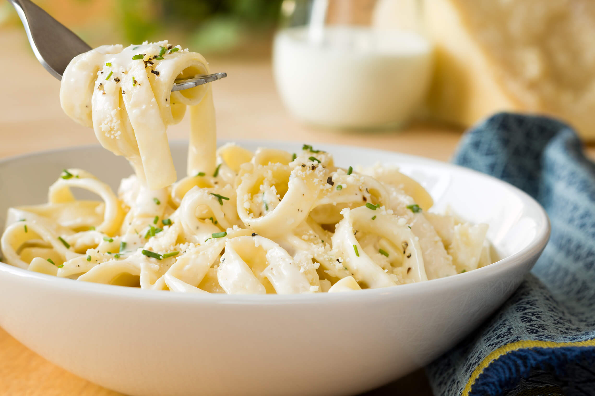

Fettuccine Alfredo

Pasta Paradise:
Have everlasting energy with this Fettuccine Alfredo recipe, put together with simple ingredients anyone can get their hands on.
Prep Time: 10 mins | Cook Time: 10 mins | Total Time: 20 mins | Servings: 4
Ingredients:
- 10 ounces fettuccini pasta
- 1/2 cup butter
- 5 cloves garlic, chopped
- 1 cup heavy cream
- 1 egg yolk
- 2 cups freshly grated Parmesan cheese
- 2 tablespoons dried parsley
Steps:
- Bring a large pot of lightly salted water to a boil. Add pasta and cook for 8 to 10 minutes or until al dente; drain.
- Meanwhile, in a large skillet melt butter and add chopped garlic. Cook on low for about 5 minutes, stirring often to prevent garlic from burning.
- Pour about a 1/4 cup of heavy cream into a small bowl. Add egg yolk and beat together; set aside.
- Pour remaining cream into the skillet. Increase heat to medium-high. As cream starts to boil, mix rapidly using a whisk. Add egg mixture slowly to prevent curdling, whisking until well blended. Stir in 1 cup Parmesan cheese until combined.
- Add remaining Parmesan cheese and parsley; mix until smooth. Remove from heat and serve over cooked pasta.
Nutrition (Per Serving): 854 calories | 59g fat | 56g carbs | 27g protein